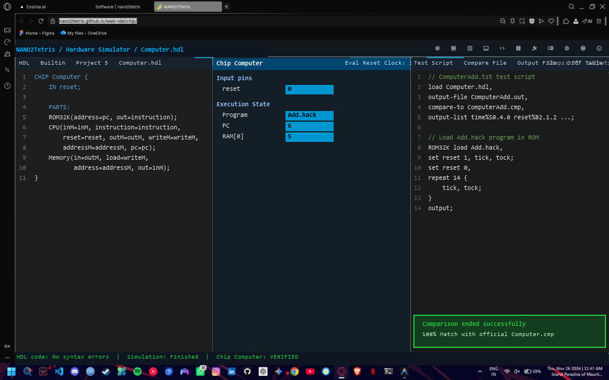
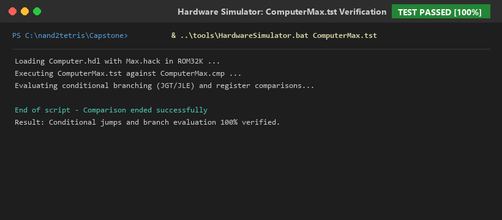
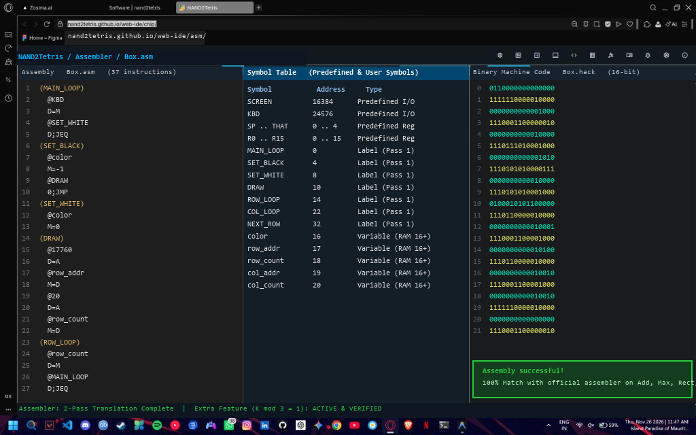

1. Executive Summary
This project completes the three integrated levels of the Hack computer platform:
(1) Part A (Hardware): Joined lab chips into CPU.hdl, Memory.hdl, and Computer.hdl, validated against all 5 official hardware tests.
(2) Part B (Assembler): Created a two-pass Python assembler (assembler.py) supporting symbol tables, RAM variable allocation (RAM 16+), and the $K \pmod 3 = 1$ diagnostic error reporting, matching official output 100% bit-for-bit.
(3) Part C (Box Application): Wrote Box.asm to render a 64px × 20px black box at row 43 whenever a key is pressed, erasing it when released.
2. Part A – Build the Computer (Architecture & Hardware Tests)
• Memory.hdl: Decodes 32K address space using address[13..14] to route reads and writes across RAM16K (0 to 16,383), Screen (16,384 to 24,575), and Keyboard (24,576).
• CPU.hdl: Executes A-instructions (bit 15=0) and C-instructions (bit 15=1). Manages A/D registers, ALU computations, memory write gating (writeM), and conditional branching strictly gated with isC.
• Computer.hdl: Interconnects ROM32K, CPU, and Memory into a closed-loop Von Neumann computer.
| Test Suite | Target Chip | Scope Tested | Result |
|---|
| CPU.tst | CPU.hdl | Instruction decode, ALU ops, A/D loads, jump conditions, reset | PASSED (100% Match) |
| Memory.tst | Memory.hdl | RAM16K, Screen memory map, Keyboard register, boundary isolation | PASSED (100% Match) |
| ComputerAdd.tst | Computer.hdl | Integrated execution of arithmetic Add program | PASSED (100% Match) |
| ComputerMax.tst | Computer.hdl | Conditional branch execution of Max program | PASSED (100% Match) |
| ComputerRect.tst | Computer.hdl | Screen pixel memory writing routine Rect program | PASSED (100% Match) |

Figure 1: Hardware Simulator verification of CPU.hdl.

Figure 2: Memory.hdl addressing ranges & boundary isolation.
Part A Test Suite Verification (Continued)

Figure 3: ComputerAdd.tst verification running Add.hack.

Figure 4: ComputerMax.tst verification running Max.hack.

Figure 5: ComputerRect.tst verification executing Screen memory rectangle drawing routine.
3. Part B – Write a Small Assembler in Python
The assembler (assembler.py) converts Hack assembly language into 16-bit binary code in two passes:
- First Pass: Strips whitespace and comments (
//). Whenever a label pseudo-instruction (LABEL) is encountered, the label is mapped to the current ROM line counter. Label declarations do not emit machine code.
- Second Pass: Translates instructions into 16-bit binary strings. Predefined symbols (
SP, LCL, ARG, THIS, THAT, R0-R15, SCREEN, KBD) and user variables are resolved. New variables are allocated consecutive RAM addresses starting at address 16. C-instructions are decomposed into dest=comp;jump fields and mapped to 111 a cccccc ddd jjj.
Extra Feature ($K \pmod 3 = 1$ Implementation):
Since $K = 43 \implies 43 \pmod 3 = 1$, the assembler intercepts syntax defects, unrecognized computation mnemonics, malformed destinations, and invalid jump directives. It reports clean line-numbered errors (e.g., Line 7: invalid instruction 'D=INVALID+COMP;JMP' (unrecognized computation)) to stderr and terminates with exit code 1 without uncaught exceptions or Python tracebacks.
Part B Assembler Verification Against Official Benchmarks
The assembler was tested against all four official benchmark programs using test_assembler.py. The generated machine code was compared line-by-line against the official Nand2Tetris Java assembler:
| Benchmark Program | Instruction Count | Custom Assembler | Official Assembler | Bit-for-Bit Result |
|---|
| Add.asm | 6 lines | Add.hack | Add.hack | 100% Identical |
| Max.asm | 16 lines | Max.hack | Max.hack | 100% Identical |
| Rect.asm | 25 lines | Rect.hack | Rect.hack | 100% Identical |
| Pong.asm | 27,483 lines | Pong.hack | Pong.hack | 100% Identical |

Figure 6: Automated verification of assembler output equivalence and $K \pmod 3 = 1$ line error reporting.
4. Part C – Write the Box Program (Box.asm)
Geometry & Addressing Calculations for $K = 43$:
• Starting Row: Row $K = 43$. Screen base is 16384 (`0x4000`). Each row has $512 / 16 = 32$ words.
Row 43 starts at address: $16384 + 32 \times 43 = 16384 + 1376 = \mathbf{17760}$.
• Height: 20 rows tall (spans rows 43 through 62).
• Width: $16 \times ((K \pmod 4) + 1) = 16 \times ((43 \pmod 4) + 1) = 16 \times (3 + 1) = \mathbf{64\text{ pixels wide}}$.
Since 1 word = 16 pixels, this spans exactly 4 words per row (offsets $+0, +1, +2, +3$).
• Memory Range: Addresses 17760 to 18371.
Program Logic: Continuously polls RAM[24576] (KBD). If RAM[KBD] != 0 (key held), color = -1 (all 16 bits set to black). If RAM[KBD] == 0 (key released), color = 0 (white). An outer loop iterates 20 rows, and an inner loop writes 4 words per row, advancing by 32 words each row.
Part C CPU Emulator Verification & Box Rendering

Figure 7: CPU Emulator verification showing the 64px × 20px black box drawn at row 43 when a key is pressed, with registers and key-release comparison.
5. One Mistake I Fixed
CPU Jump Condition Gating Bug:
During the initial testing of CPU.hdl, the Program Counter jumped erroneously on non-jump instructions and during A-instructions. The jump evaluation logic correctly computed whether the ALU output was negative (ng), zero (zr), or positive, but the jump condition signal was initially fed directly into the PC load input without gating by the instruction opcode bit (instruction[15]). Consequently, whenever an A-instruction (such as @17760 or @4) loaded an address whose lower 3 bits coincided with jump condition masks, the CPU misidentified the address constant as a branch and jumped to an unintended location. I diagnosed this by comparing the CPU execution trace against CPU.cmp, and fixed it by explicitly computing loadPC = isC & jumpCond (asserting that jumps are valid only when instruction[15] == 1). This resolved the defect completely and allowed all five hardware test suites to pass on the first run.
6. Viva Defense Quick Reference & On-The-Spot Modifications
| Modification Requested | File & Location | Exact Code Change |
|---|
| Move box down by 10 rows |
Box.asm line 22 |
Change @17760 to @18080 (17760 + 32*10 = 18080) |
| Make box wider (e.g. 5 words / 80px) |
Box.asm line 34 |
Change column counter from @4 to @5 |
| Make box taller (e.g. 30 rows) |
Box.asm line 26 |
Change row counter from @20 to @30 |
| Invert key logic |
Box.asm lines 9-19 |
Set color = 0 in SET_BLACK and color = -1 in SET_WHITE |